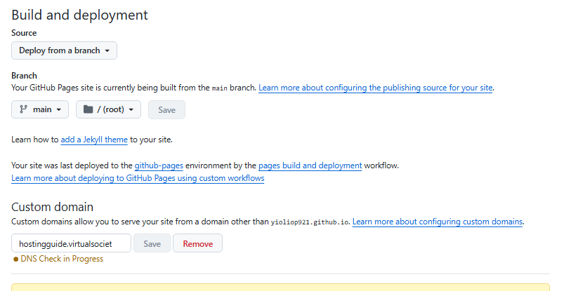
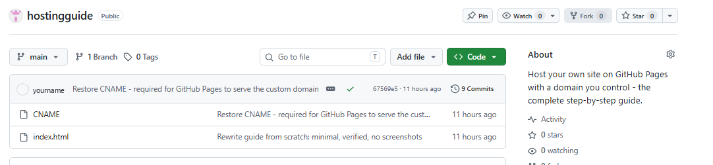
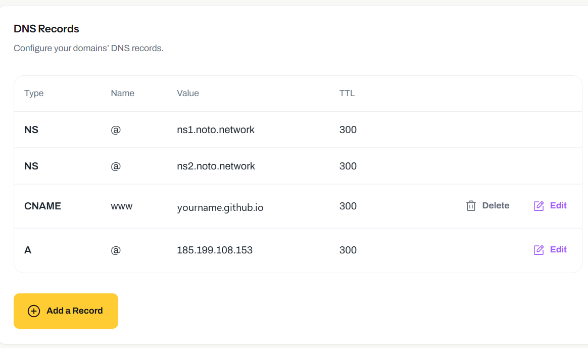
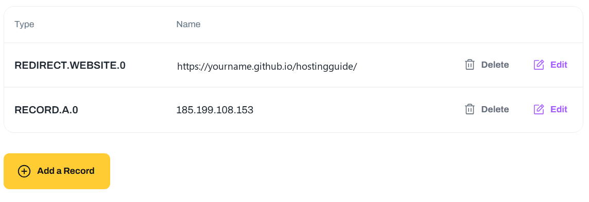
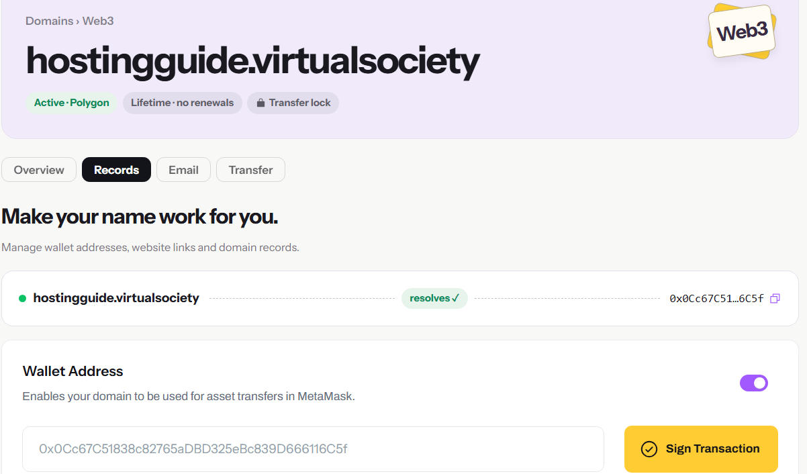
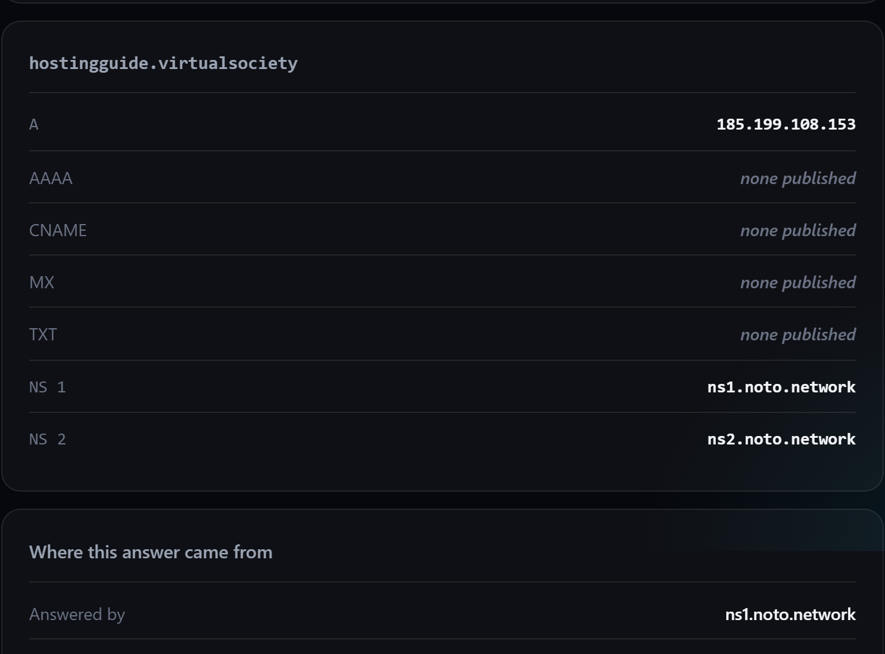
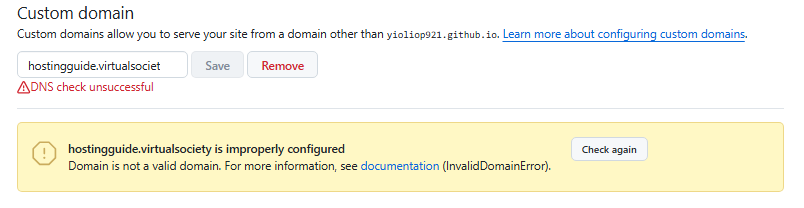
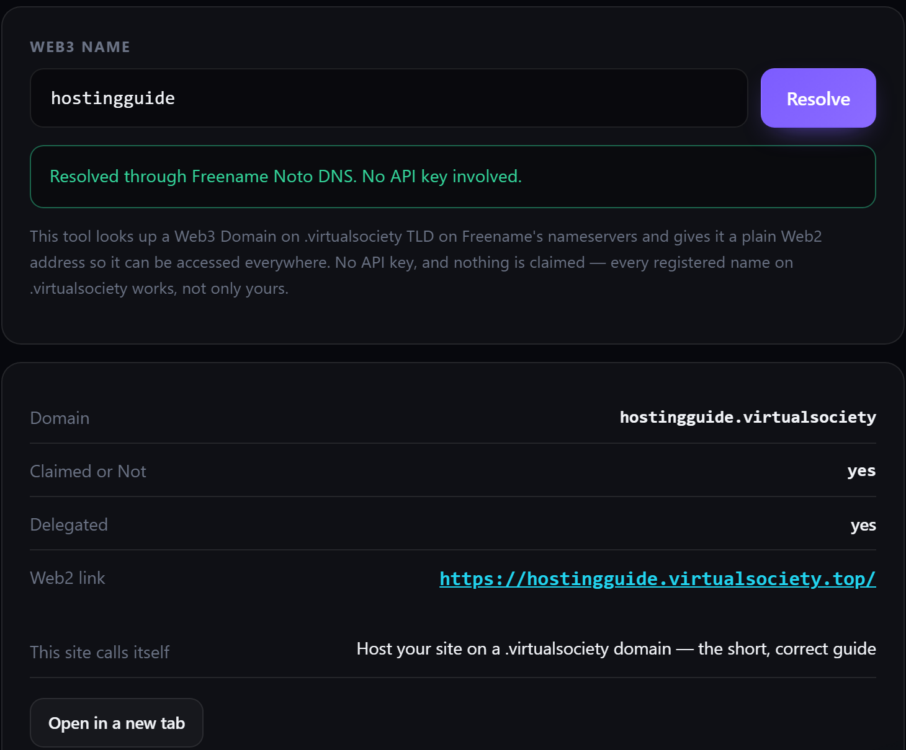

Six steps · Free forever · No build step
Put your site on your own web3 domain.
Plain HTML files, a free GitHub Pages address, and a domain you actually own. This guide contains only the steps that are genuinely required — and the handful of silent failures that make it look broken when it isn’t.
How this actually works
Read firstYou have three moving parts. GitHub holds and serves the files. Your domain tells the world where they are. A third thing — the redirect — is what makes a web3 domain usable in an ordinary browser.
| part | who uses it | what it holds |
|---|---|---|
| DNS zone record | Normal DNS lookups | One IP: 185.199.108.153 |
| On-chain records | Web3 browsers | The same one IP, plus the redirect |
CNAME file | GitHub | Your domain, so GitHub answers for it |
A .virtualsociety domain keeps records in two places: a DNS zone and
the blockchain. Different software reads different layers. Setting one and not the
other is the single most common reason a site “works for me but not for
anyone.” You need both, and they must agree.
Which half is broken
Almost every failure is one of three things, and you can name the culprit before you
change anything. Check the free .github.io address first: it tells you
whether the fault is GitHub or your records.
| what you see | which half is wrong |
|---|---|
The site opens at YOURNAME.github.io/REPO/ | GitHub is fine. Everything left is records → step 3 |
That .github.io address is a 404 too | GitHub: Pages, the branch, or the file name → step 2 |
Your name answers 34.22.218.54 | The name publishes nothing usable → step 5 |
What you need first
- A GitHub account
- Your
.virtualsocietydomain, in your Freename dashboard - One folder of files:
index.html, and whatever else you want
Build the site on GitHub
10 min2a — Create the repo
On GitHub, New repository. Name it anything. Set it to Public — Pages on a private repository is a paid feature. Leave Add a README off and .gitignore at None. Create it.
2b — Upload your files
In the empty repo choose uploading an existing file, drag your files in, and commit. Two things matter:
index.htmlmust sit at the top level of the repo and be spelled exactlyindex.html— lowercase. In a subfolder, or spelledIndex.html, the site is a404.- Pages publishes the repository as it is, with no build step, so upload only files you are happy for anyone to read.
2c — Turn on Pages
Repo → Settings → Pages → Source:
Deploy from a branch, branch main, folder
/ (root). Save.

Deploy from a branch, branch main, folder / (root). The custom-domain box further down is step 2d.
GitHub builds in about a minute. You can watch it on the Actions tab. Once it
finishes, your site is live at
https://YOURNAME.github.io/REPO/. Open it and confirm before moving on.
2d — Add the CNAME file
Create a file named exactly CNAME — capital letters, no extension
— containing your domain and nothing else:
yourname.virtualsocietyCommit it to the same branch.

CNAME and index.html.
The CNAME is how GitHub knows which site to serve when your domain
asks for it. Without it, GitHub answers 404 to your domain even though
everything else is configured perfectly. It also makes GitHub redirect the
.github.io address to your domain, which looks alarming but is correct
and harmless.
Rename CNAME to CNAME.disabled and commit, and GitHub
serves YOURNAME.github.io/REPO/ again. Remove the file altogether and
the custom host simply stops answering — that is the 404 in
step 5.
Point the domain at it
10 minOpen your domain in Freename → Records. Add these.
3a — DNS records
| type | name | value | TTL |
|---|---|---|---|
| A | @ | 185.199.108.153 | 300 |
| CNAME | www | YOURNAME.github.io | 300 |

NS records alone — they point at Noto. Add the CNAME and the single A.
GitHub normally asks for four addresses. This zone allows a single apex
A, and one is enough — it is the only one we need in either
layer. Do not add the other three anywhere; they change nothing and only give you
more places to make a mistake.
That toggle says it will disable your root A record. Switch it on and
your domain stops pointing at GitHub entirely. It is for domains you want to send
somewhere else, not for hosting.
GitHub only issues a certificate for a domain it can find in the public DNS root, and your name is not in it. The checkbox never becomes usable, no matter how correct your records are. That is the same alt-root limit as step 6.
3b — Web3 (on-chain) records
These are the ones web3 browsers read. Add exactly two:
| key | value |
|---|---|
| record.A.0 | 185.199.108.153 |
| redirect.WEBSITE.0 | https://YOURNAME.github.io/REPO/ |
One address, one redirect. Adding record.A.1 through
record.A.3 is not required and has no effect — this exact pair
is what a working setup looks like. If you already added the extra three, delete
them; the site keeps working.

Capitalisation. The keys are lowercase:
record.A.0. Written RECORD.A.0 it saves, appears in your
list, and is ignored.
Trailing slashes. The redirect value ends with /.
Without it the browser may be sent to a folder listing.
The redirect must be a real URL. Point it at the public
.github.io address — never at your own web3 domain, which
cannot be reached from the ordinary web.
Freename matches a record by its key, so record.A.0 is a row you edit,
not a list you append to. A value that is not an address will not work either: keep
it a bare IP, with no http:// and no path. The URL belongs in
redirect.WEBSITE.0 and nowhere else. After any change,
sign again — an unsigned edit is a draft, exactly like the
first one.
3c — Sign the transaction
Nothing is live until you do this. Freename will show a Sign Transaction button once your wallet is connected; press it and confirm.

resolves badge only means the name resolves — not that your changes are published.If a record ends up carrying an internal pointer to a key that does not exist — a stray name, a typo, a leftover — the domain silently stops resolving and nothing in the dashboard will tell you why. The record looks perfect. If a domain is stuck, delete the record and re-add it clean. It is the first thing to try and it fixes most cases.
Check it works
2 minRun this on any Windows machine or PowerShell:
nslookup -type=A yourname.virtualsociety ns1.noto.network| you get | meaning |
|---|---|
| 185.199.108.153 | Working. Done. |
| 34.22.218.54 | Stuck — go to step 5 |
| No answer / SERVFAIL | Wait two minutes, then step 5 |
Then confirm the site is genuinely being served:
curl -H "Host: yourname.virtualsociety" http://185.199.108.153/
The nslookup returns your GitHub IP, the curl prints your
HTML, and opening https://YOURNAME.github.io/REPO/ in a normal browser
shows your site. Alt-root domains have no public DNS and no public certificate, so
they will never load in a stock browser — that is expected and is what the
redirect exists to work around.
Or check it in a browser, with nothing installed
Two tools on the registry’s own site read the same nameservers this step does,
so you can confirm the answer without a terminal — and they work for any
registered .virtualsociety name, not just yours.
| tool | what it tells you |
|---|---|
| DNS records | The raw records Noto publishes for a name, read straight from the authoritative servers. Path: virtualsociety.top/tool/dnscheck |
| Get a web2 link | The ordinary-web address that serves that name. Path: virtualsociety.top/getweb2link |

nslookup returns: one A, everything else none published, and the two Noto nameservers. Anything different here is the thing to fix.When it doesn’t work
Keep thisStuck on 34.22.218.54
That is Freename’s parking page. It means the nameserver found no usable record. It will not fix itself. Work down this list:
- Delete and re-add the
Arecord. Always first. This clears a bad internal pointer, which is the usual cause and is invisible in the dashboard. - Check every key letter by letter for a typo or a leftover name.
- Check capitalisation — lowercase
record.A.0. - Confirm you signed the transaction. Unsaved-to-chain records show perfectly and do nothing.
- Only then wait two minutes. Under two minutes is propagation. Past two minutes is a fault.
Re-saving a value that has not changed can be treated as no change at all. Set the
record to GitHub’s second address, 185.199.109.153, sign, wait two
minutes, then set it back to 185.199.108.153 and sign again. GitHub
answers on any of its four addresses, so if the site comes up while the record holds
the second value, leave it there — one working address is the whole
requirement.
The record saved but nothing moved
Freename keeps a key exactly as you typed it and matches it literally. A key that looks almost right saves without complaint and is never used:
| key you typed | what happens |
|---|---|
record.A.0 | Correct, and matched |
RECORD.A.0 | Saves, appears in the list, ignored |
record.A · A.0 | Never used |
redirect.WEBSITE | Missing the .0 — ignored |
GitHub returns 404 for your domain
The CNAME file is missing, misspelled, or in the wrong folder. It must sit
at the top level of the repo, named CNAME, with no extension.
GitHub says “DNS check unsuccessful”
This is expected. Ignore it. GitHub checks your domain by looking it up in the public DNS root, and an alt-root domain is not in that root — so the check can never succeed, no matter how correct your records are.

DNS check unsuccessful and InvalidDomainError appear on every correctly configured alt-root domain. The site still serves. (“virtualsociet” in the field is just GitHub’s input box clipping the last letter — the notice underneath shows the full, correctly stored domain.)
Prove it with the nslookup and curl commands in step 4, or
the registry’s DNS tool. If those return your GitHub IP and your HTML, the setup
is finished and this warning is just noise.
Your Pages address redirects to a dead page
That is the CNAME working correctly — GitHub is sending
.github.io traffic to your domain. Nothing is wrong. Ignore it.
Everything looks right and nothing loads
You almost certainly skipped the Sign Transaction step. Saving a record is not publishing it.
The one hard limit
Know thisAlt-root domains have no entry in the public DNS root and no public certificate authority, so your domain will never open in an ordinary browser. That is a property of the domain, not a mistake in your setup.
Two consequences worth planning around:
| you want | what works |
|---|---|
| A site anyone can open | The .github.io address, the registry’s web2 mirror below, or your own normal domain pointed at GitHub |
| A web3 browser to open it | Works, via the redirect you set in step 3b |
| Both | Host in both places, or use the mirror — it needs no second copy of your files |
The web2 mirror you already have
Every registered .virtualsociety name is also served on the ordinary web
at <name>.virtualsociety.top, over normal HTTPS, from a proxy in
front of your GitHub Pages site. There is nothing to configure and nothing to keep in
sync.
https://yourname.virtualsociety.top/A name that has nothing published yet opens a holding page there instead, which is how you can tell the two apart. Relative links keep working, because the mirror rewrites them; the one thing it cannot rescue is an absolute URL that hard-codes your web3 name.

Obian resolves the domain to an IP and then requests that IP on its own, without telling GitHub which site it wants. GitHub cannot answer that — it serves thousands of sites and needs the name to pick one — so you get a 404. No record setting changes this, and the mirror does not either: it is a web2 address, not part of the name itself. If a site must open in Obian, host it somewhere whose IP answers without a hostname, such as Vercel.